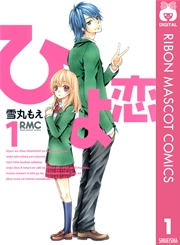
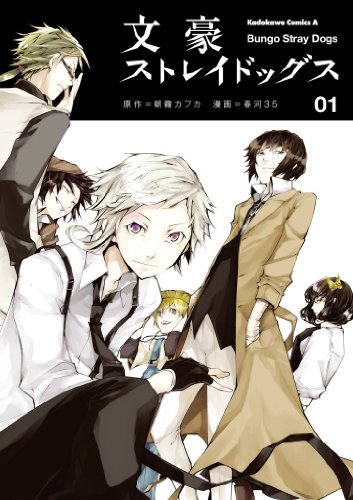
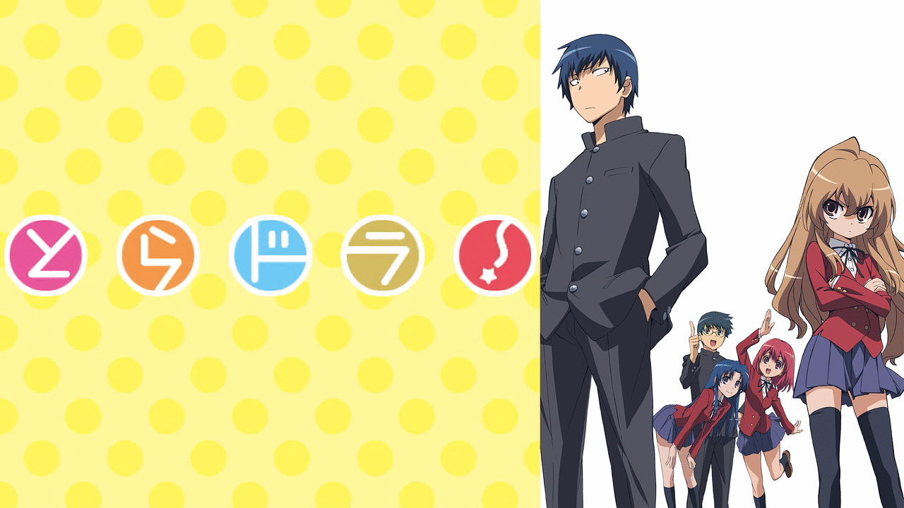

Hobby
私の好きな漫画、アニメ、ゲームを紹介します
あらすじもあるので興味を持ってもらえたら嬉しいです
漫画
ひよ恋

高校まであまり友人もできず、人見知りの西川ひよりと、
彼女と同じ学校で人気者の広瀬結心との恋愛を描いている。
身長や性格、生い立ちがまったく真逆の2人が惹かれあう物語。
作品全体が明るくポジティブな雰囲気に包まれており、
登場人物に悪役が1人も存在しないのも大きな特徴
文豪ストレイドッグス

天涯孤独の少年・中島敦が、
とある事件をきっかけに異能力者そろう
「武装探偵社」に入社し、
変人ばかりの仲間たちと共に
さまざまな事件を解決していく模様を描いた
サスペンス＆バトルマンガ
アニメ
とらドラ！

不憫な高校２年生 高須竜児が
新しいクラスで、超ミニマムサイズな
身長の美少女 逢坂大河に出会う
竜虎相打つ恋の共同戦線
ハイテンション学園ラブコメディー
呪術廻戦

「ダークファンタジー×アクション」漫画。
普通の高校生である主人公・虎杖悠仁が
ある出来事をきっかけに邪悪な「呪霊」
と呼ばれる存在と戦う「呪術師」となり
仲間と助け合いながら呪霊と戦っていく物語
2ページ目に続く>>>
各作品のあらすじは、それぞれのHP等を参考とさせていただいています。